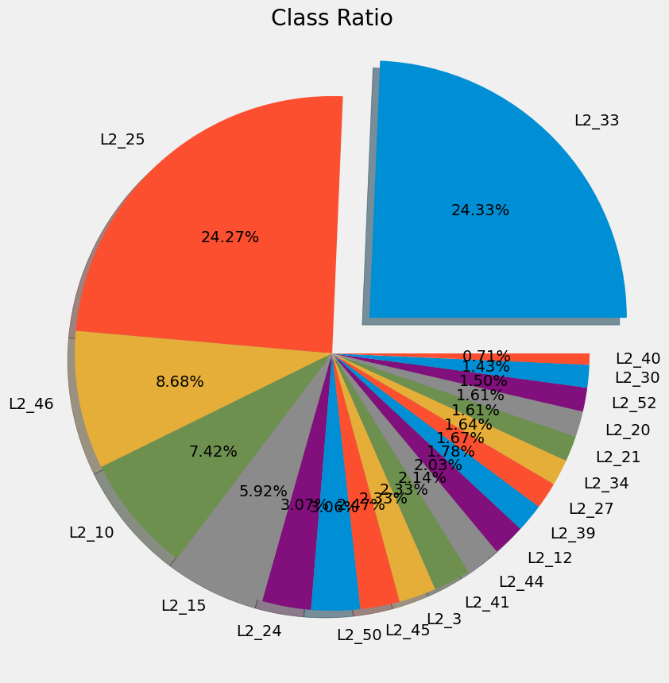
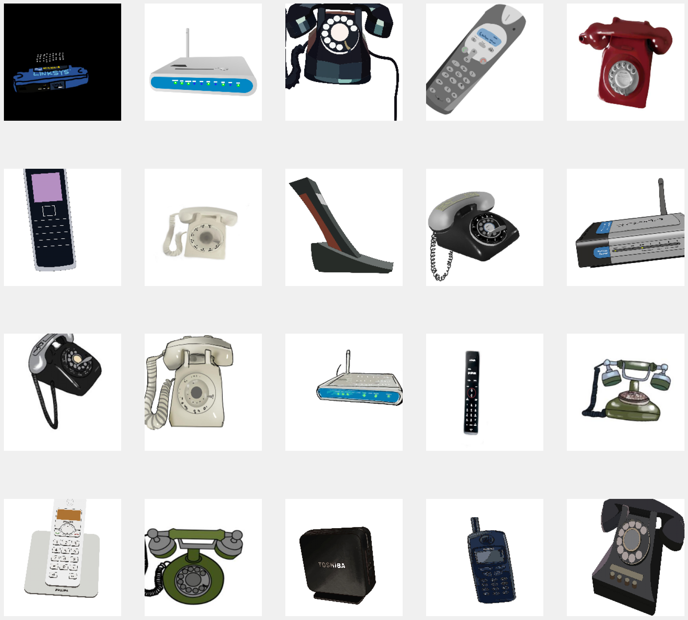
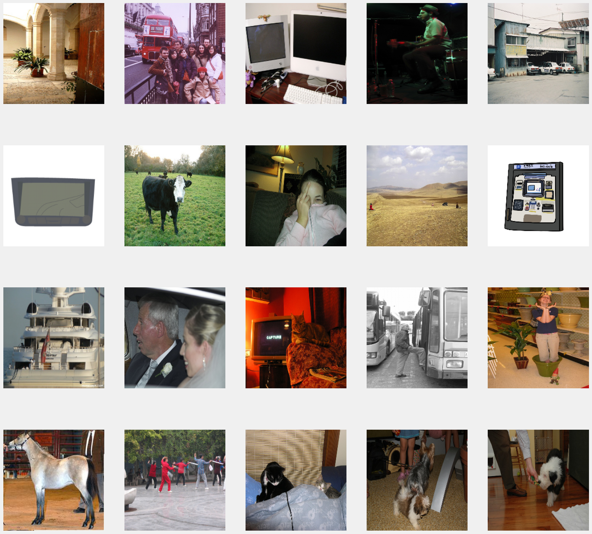
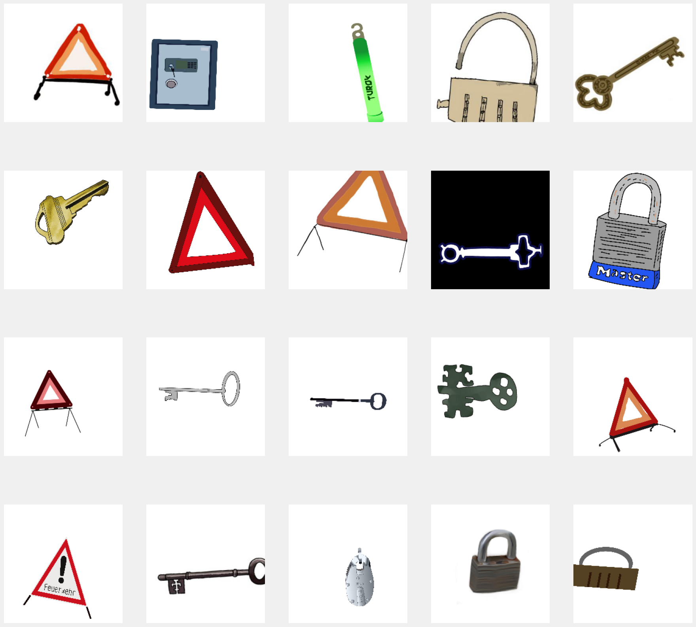
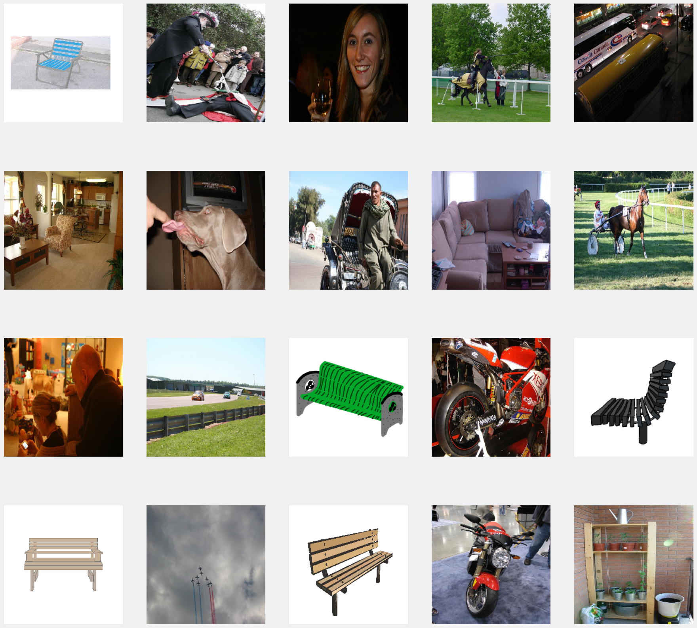
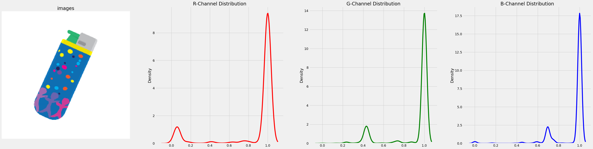
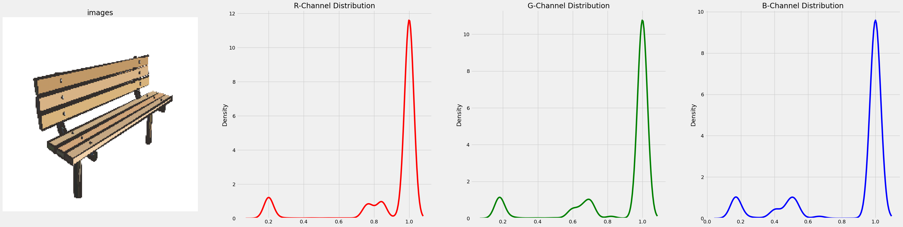
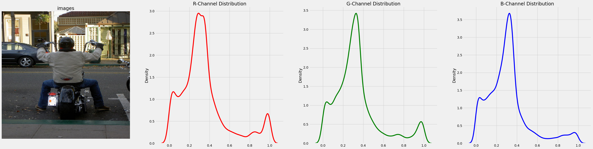
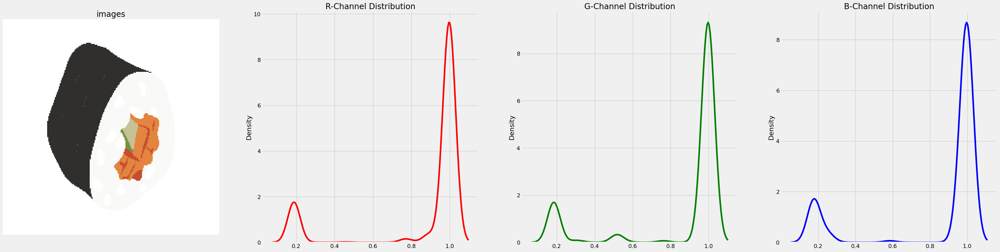
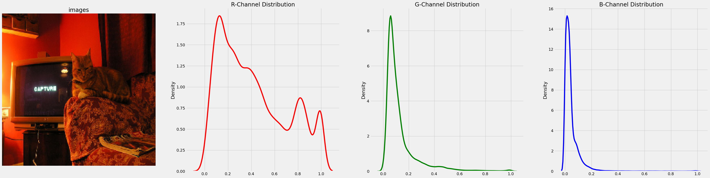

Dataset의 크기 : 25503
Dataset에 존재하는 클래스의 갯수 : 20
setup
{'name': 'hoyeon', 'path': 'C:/Users/22668/Desktop/github/sin-hoyeon/posts/creatorcamp/dataset'}Import & Setup
EDA

Insight1
- 이미지의 갯수는 L2_33이 가장 크고 L2_40이 가장 작음
- L2_25, L2_33이 데이터 중 거의 절반을 차지하고 있고,나머지 데이터들이 매우 적은 비율을 가짐 \(\to\) data set에 class imbalanced가 존재함




Insight2
- 우리의 목적은 픽토그램을 올바르게 분류하는 것입니다.
- 하지만 분류해야 할 대상이 아닌 실제사진이 섞여있는 클래스가 존재함을 알 수 있음.(8,1,5,14,18)
- 또한 임의적으로 이미지를 샘플링해본 결과 그 수가 수가 적지않음.
- 이는 학습을 방해하는 요소로 제거해줘야 할 것입니다.
5 782
18 781
8 595
14 593
1 518
Name: class_num, dtype: int64




Insight3
- 각 채널의 픽셀값의 분포 실제사진이던 추상미지던 정규분포를 따르지 않습니다.
- 픽토그램의 경우 모든 채널에서 1주변의 값이 나올 확률이 높습니다. 이는 픽토그램의 배경이 흰색위주라 그렇습니다.
- 실제사진의 경우 픽셀값이 골고루 퍼져 존재하기 때문에 모든 채널에서 1주변의 값이 나올 확률이 상대적으로 낮으며 픽셀값들의 분포도 조금 더 퍼져있습니다.
정리
- Data set에는 20개의 클래스로 분류되어 있는 총 25503개의 이미지가 존재합니다.
- class imbalanced 문제가 존재합니다.
- 분류해야할 픽토그램이 아닌 실제사진이 이상치로 존재합니다.
- 이는 학습에 방해하는 요소로 모형을 학습시키기 전에 미리 제거해줘야 할 것입니다.
- 픽토그램의 경우 픽셀값을 확인해본 결과 모든 채널에서 1주변으로 값이 몰려있으며 실제사진의 경우 1주변에 몰려있지 않고 값이 골고루 퍼져서 존재합니다.